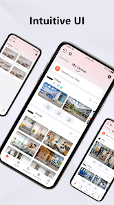
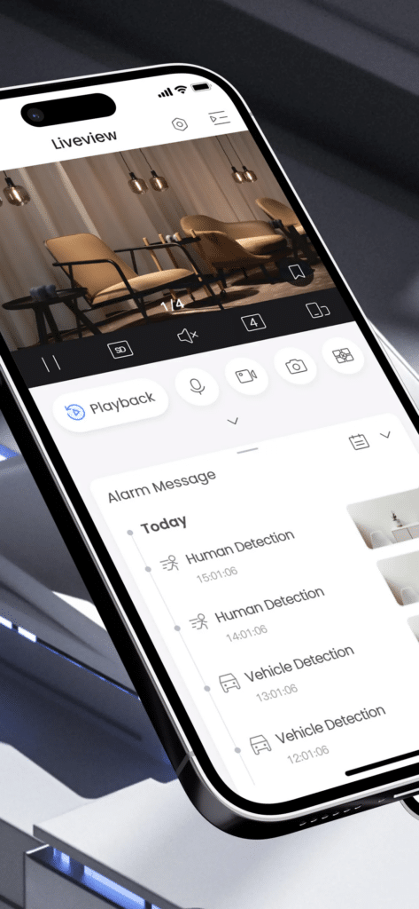
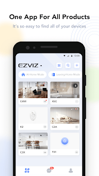
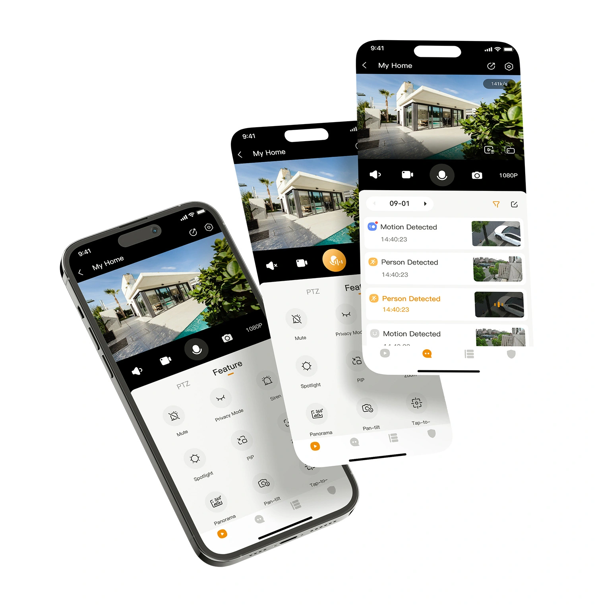

Encarnación · Itapúa · Paraguay
Redes, seguridad física y soporte técnico para operar sin improvisar
Instalamos y ordenamos WiFi, CCTV, alarmas, control de acceso, incendio, soporte y páginas web para hogares, comercios, pymes y empresas de Encarnación e Itapúa. La idea no es solo que funcione: es que quede claro, documentado y mantenible.
Cuando la instalación crece sin orden, cada falla cuesta más
El WiFi puede llegar a todos lados y aun así andar mal. Las cámaras pueden grabar sin cubrir los puntos críticos. También aparecen claves perdidas, equipos sin inventario y técnicos que resuelven algo sin dejar documentación para el próximo cambio.
Servicios técnicos para ordenar lo que ya usás todos los días
Trabajamos sobre redes, cámaras, equipos, monitoreo y presencia web con una lógica simple: revisar, instalar con criterio y dejar información útil para operar después.
Redes y WiFi
Ordenamos la conectividad para casas, locales, oficinas y empresas que necesitan cobertura real, menos cortes y una red que se pueda mantener.
- Routers, switches y APs
- Cableado y cobertura
- Segmentación e invitados
- Revisión de saturación
Seguridad física: cámaras, alarmas, accesos e incendio
Integramos CCTV, alarmas, control de acceso y detección de incendio para hogares, comercios, oficinas, depósitos, quinchos, predios y empresas. La instalación queda pensada para controlar, alertar y operar desde el celular o desde software de gestión según el caso.
- Cámaras CCTV IP y analógicas
- DVR/NVR y acceso remoto
- Alarmas y sensores
- Control de acceso
- Detección/alarma de incendio
- Revisión, mantenimiento y documentación
Soporte e infraestructura
Atendemos equipos, accesos y fallas con contexto. También dejamos inventario básico para no depender de memoria o mensajes viejos.
- Equipos y usuarios
- Inventario técnico
- Accesos y respaldos básicos
- Documentación de entrega
Web, monitoreo y automatización
Preparamos presencia digital y seguimiento técnico para que las consultas lleguen mejor y los problemas importantes se detecten antes.
- Landing pages y formularios
- WhatsApp y SEO local
- Zabbix/Grafana
- Alertas y reportes simples
Soluciones de seguridad
Alarmas y control de acceso pasan a tener el mismo peso comercial que CCTV para resolver ingresos, alertas y operación diaria.

Alarmas
Sensores de movimiento, contactos magnéticos, sirenas, teclados, controles remotos y avisos al celular para detectar ingresos no autorizados.

Control de acceso
Lectores, tarjetas, PIN, biometría, cerraduras eléctricas y registros de entrada para controlar quién ingresa, cuándo y por dónde.

CCTV inteligente
Cámaras IP, WiFi o DVR/NVR para visualizar, grabar, revisar eventos y complementar alarmas o accesos.

Incendio
Sensores de humo, calor, sirenas, centrales y señalización básica según necesidad del lugar.
Casos donde una alarma o acceso cambia todo
Usos concretos donde una mejora puntual en seguridad física resuelve control, aviso o seguimiento.
¿Necesita ordenar redes, CCTV, alarmas, accesos, incendio, soporte o presencia web sin improvisar?
Consultar por cámaras, alarmas o accesosPrimero ordenamos el problema, después instalamos
Antes de comprar o mover equipos, revisamos el estado real y definimos qué conviene resolver primero según impacto, presupuesto y mantenimiento posterior.
Revisamos
Lugar, equipos, red, cámaras, uso real y fallas que se repiten.
Priorizamos
Qué conviene resolver primero según impacto y presupuesto.
Instalamos/configuramos
Dejamos funcionando con criterio técnico y pruebas básicas.
Documentamos
Equipos, accesos, ubicaciones y recomendaciones para próximos cambios.
Acompañamos
Ajustes y soporte después de la entrega.
Mejoramos
Próximas etapas sin rehacer todo desde cero.
Dónde encaja Jesareko
Intervenimos cuando la instalación ya existe, cuando algo falla seguido o cuando un espacio nuevo necesita quedar preparado desde el inicio.
Hogares y residencias
Necesidad: WiFi que cubra habitaciones, patio o quincho, CCTV, alarmas y acceso claro desde el celular, con detección de incendio donde haga falta.
Resultado: Instalación más ordenada y fácil de mantener.
Comercios y locales
Necesidad: WiFi para caja, POS, clientes, CCTV, alarmas, control de acceso y contacto digital que responda rápido.
Resultado: Menos dependencia de soluciones improvisadas en horario de atención.
Pymes y oficinas
Necesidad: Equipos, usuarios, red interna, respaldos básicos, soporte, control de acceso y registro claro de seguridad física.
Resultado: Más contexto para resolver fallas sin empezar desde cero.
Empresas e instituciones
Necesidad: Cableado, CCTV, alarmas, accesos, incendio, monitoreo, documentación y coordinación con otros proveedores.
Resultado: Entregas más claras y mantenibles.
Herramientas y plataformas con las que trabajamos
No elegimos tecnología por moda. Elegimos según presupuesto, soporte local, facilidad de mantenimiento y necesidad real.
Redes e infraestructura
CCTV y videovigilancia
Alarmas
Control de acceso
Incendio
Monitoreo y soporte
Web y automatización
Apps y software de control
Además de instalar equipos, dejamos al usuario con la app o software correspondiente para visualizar, recibir alertas y operar el sistema según el equipo instalado.

App de monitoreo para cámaras y alarmas
Visualización remota, alertas y control básico según el sistema instalado.

Software de videovigilancia y gestión
Monitoreo remoto, reproducción de eventos, notificaciones y gestión según compatibilidad del equipo.

App para cámaras WiFi
Control desde celular, alertas, visualización en vivo y revisión de grabaciones.

App para hogar, comercio y sensores
Gestión de cámaras, sensores, sirenas y avisos desde el celular.
Tecnologías y referencias visuales
Trabajamos la solución según necesidad, presupuesto y disponibilidad. Las imágenes y marcas se muestran solo como referencia de líneas de equipos compatibles o habituales del mercado.
Equipos referenciales
Equipos que ayudan a explicar cómo se combinan cámaras, alarmas, monitoreo remoto y conectividad en una misma instalación.
Cámaras CCTV
Cámaras para instalación CCTV en hogares, comercios y empresas.

Cámara tipo bullet/turbo
Equipo referencial para instalaciones CCTV con DVR/NVR según necesidad.
Sistema de alarma
Sensores, sirena y avisos para proteger accesos, locales, depósitos y viviendas.
Control de acceso
Lectores y terminales para registrar ingresos y operar accesos según usuarios y horarios.

Terminal biométrico
Equipo referencial para control por huella, PIN y gestión de usuarios en puertas y oficinas.

Videovigilancia remota
Visualización remota, revisión de eventos y soporte para monitoreo desde app/software.

Cámara WiFi
Equipo WiFi para alertas, visualización móvil y cobertura simple en hogares o locales pequeños.

Cámara móvil/PT
Solución referencial para hogares, quinchos o tiendas con visión remota y alertas.
Sistema de incendio
Central, detectores y alertas para una base de protección contra humo, calor y evacuación.

Redes WiFi
WiFi, enlaces y conectividad para complementar cámaras, alarmas y sistemas de acceso.
Las marcas e imágenes se utilizan como referencia visual. La solución final depende de diagnóstico, compatibilidad, presupuesto, disponibilidad y necesidad del cliente. Las marcas pertenecen a sus respectivos titulares.
Mejoras concretas para operar con menos dudas
El valor no está solo en instalar equipos. Está en comprar mejor, fallar menos y saber qué hacer cuando haya que cambiar algo.
Menos compras a ciegas
Revisamos antes de recomendar equipos para ajustar la inversión al problema real.
Menos fallas repetidas
Buscamos causas, no solo parches, especialmente en WiFi, cámaras y equipos críticos.
Instalaciones entendibles
Dejamos ubicaciones, accesos y criterios técnicos en un formato que se pueda consultar.
Soporte más rápido porque hay contexto
Con información previa, cada ajuste o incidente arranca mejor ubicado.
El primer paso es revisar el estado actual y priorizar mejoras concretas.
Revisar mi instalaciónContanos qué necesitás ordenar
Mandanos por WhatsApp qué está fallando, qué querés instalar o qué necesitás revisar. Con esa primera información podemos orientar el siguiente paso y pedir los datos técnicos que hagan falta.
WhatsApp es el canal principal para coordinar diagnóstico, visita o soporte.
También podés enviar el mismo detalle por correo si necesitás dejar registro formal.
¿Tu red, seguridad física o soporte técnico crecieron sin orden?
Podemos revisar el estado actual, priorizar mejoras e implementar una solución clara, documentada y mantenible.